বিধবা বিবাহ
Widow
Remarriage
Rituals · II · the pyre, the white sari, the second wedding
First the pyre. Then the white sari. Then, in 1856, a second wedding.
i
The pyre
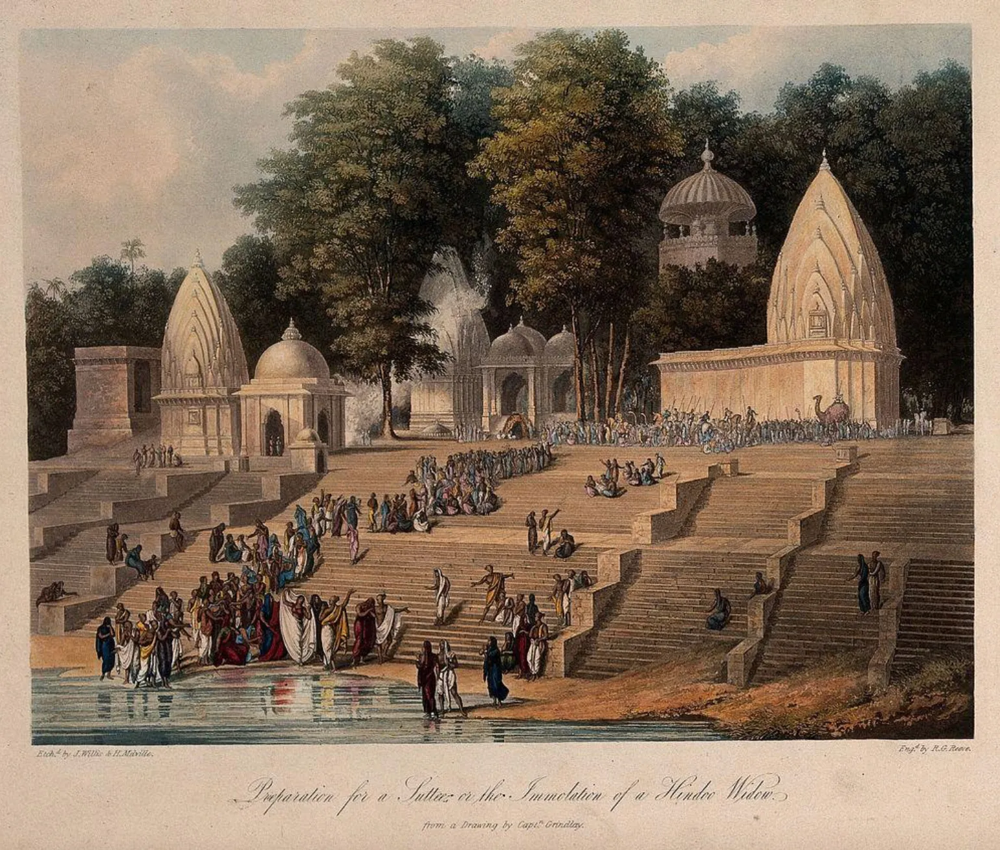
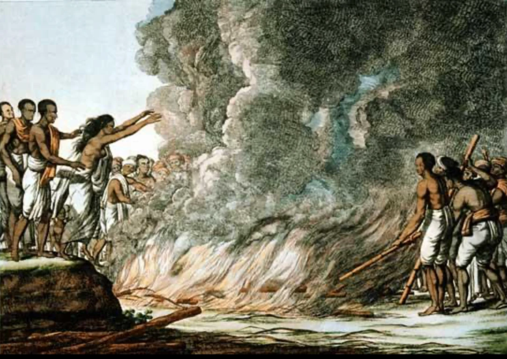
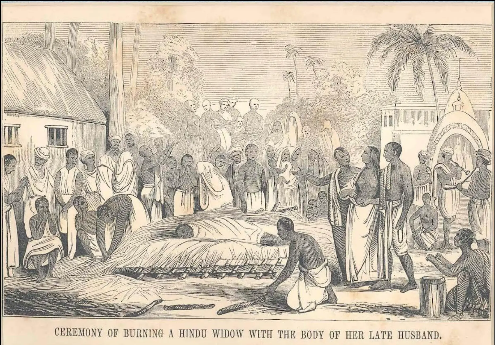
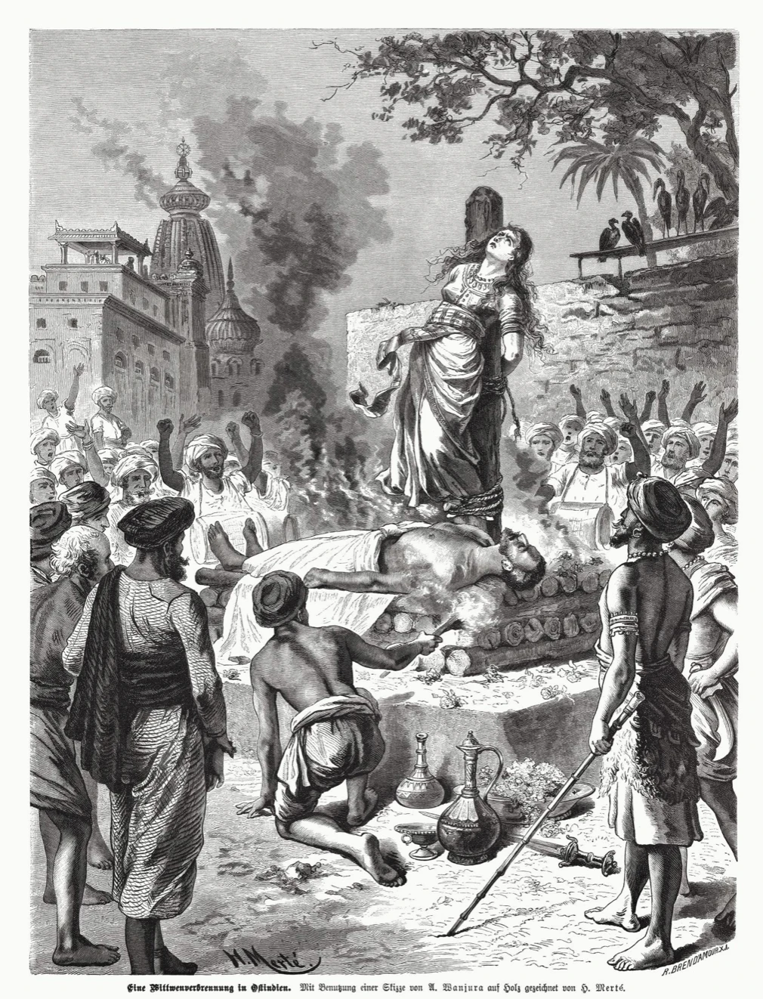
1829
Regulation XVII · sati is outlawed in Bengal.
ii
The white sari
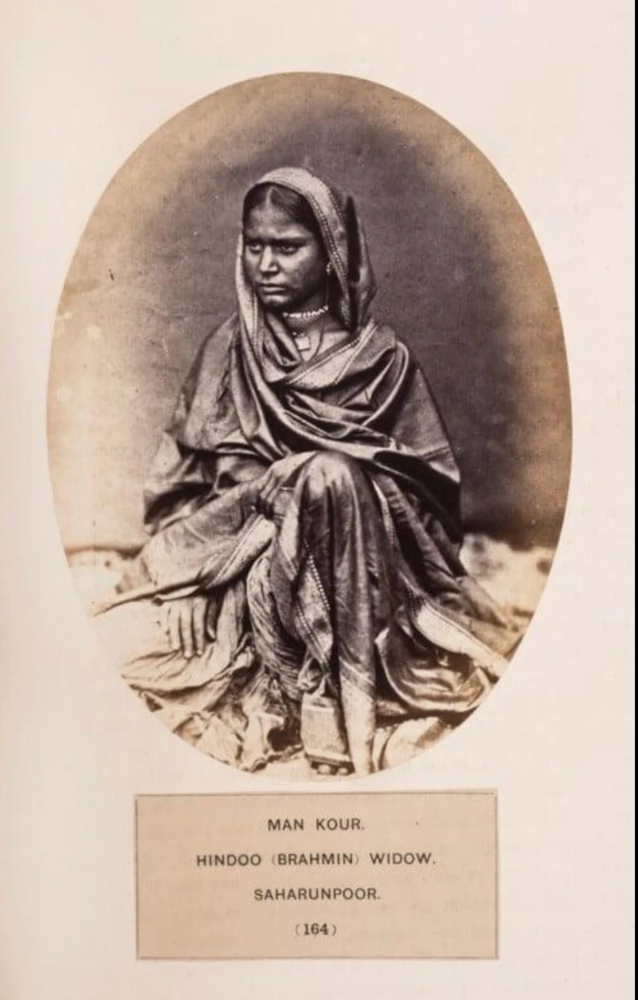
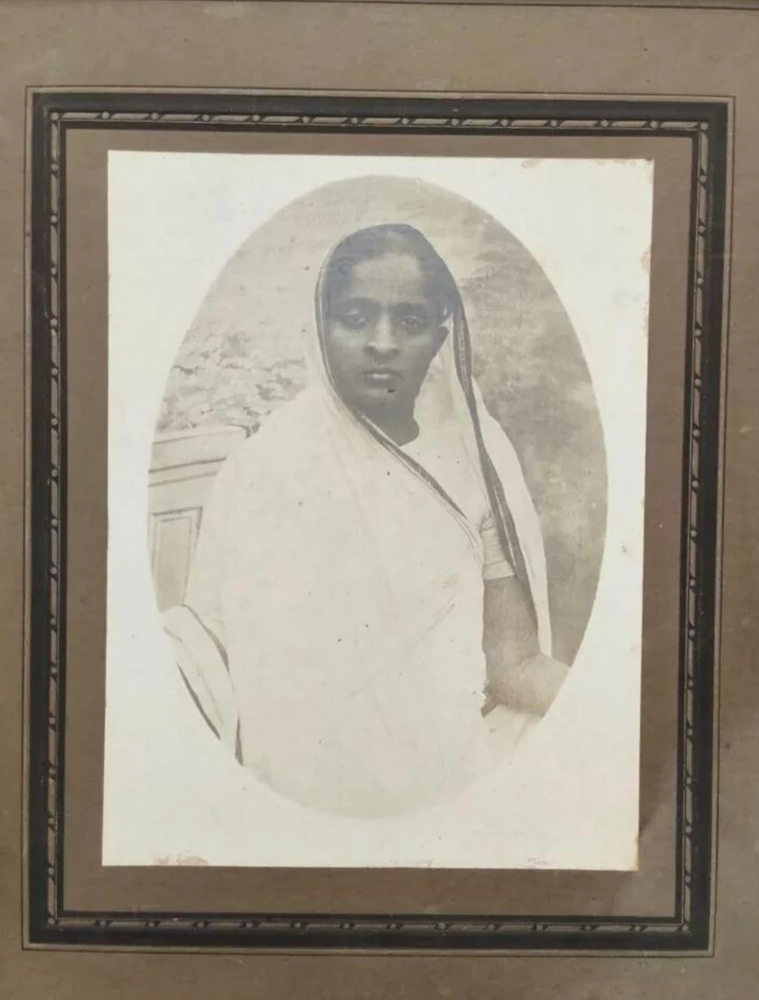
iii
The pandit
বিধবা বিবাহ
Bidhoba bibaho, "widow marriage": the opening words of his 1855 tract.
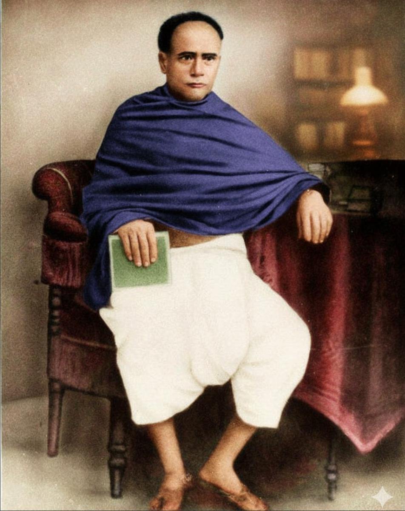
iv
The Act
Act XV of 1856
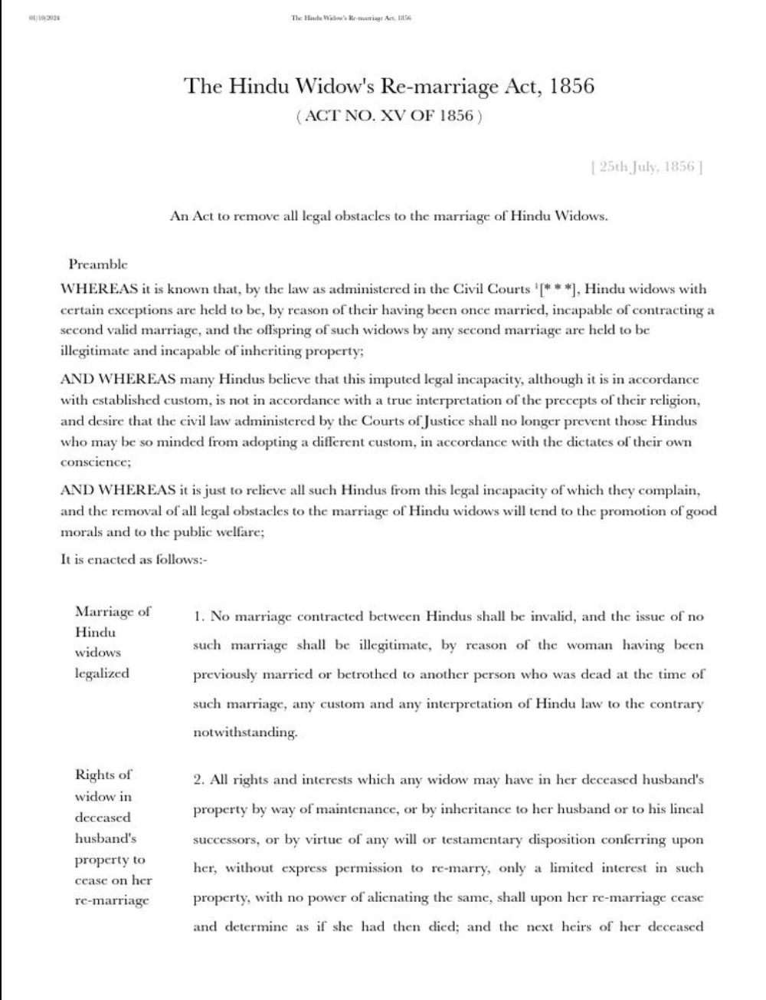
- 25 July 1856 "An Act to remove all legal obstacles to the marriage of Hindu Widows."
- Section 1 A widow's second marriage is valid, and so are its children.
- Section 2 On remarriage, she loses her rights in her late husband's property.
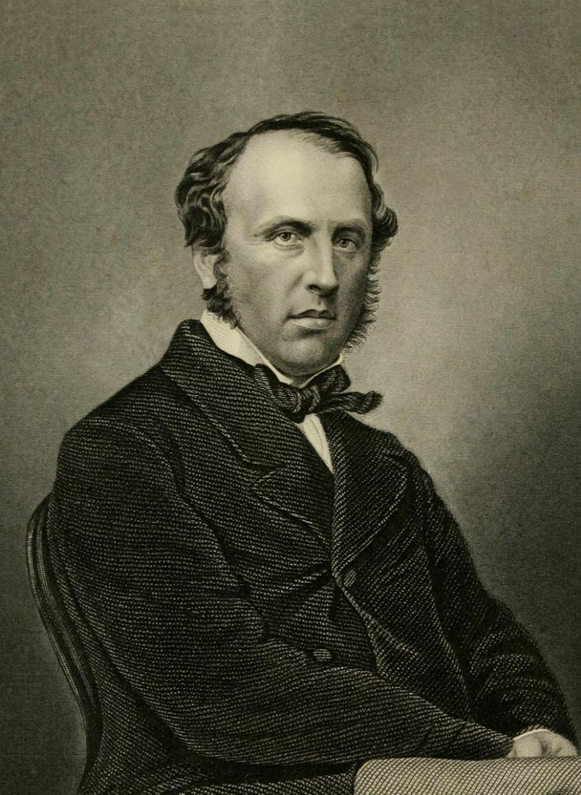
v · The second wedding
7 December 1856
Calcutta · the first widow remarriage under the Act.
vi
After
Mid-20th century
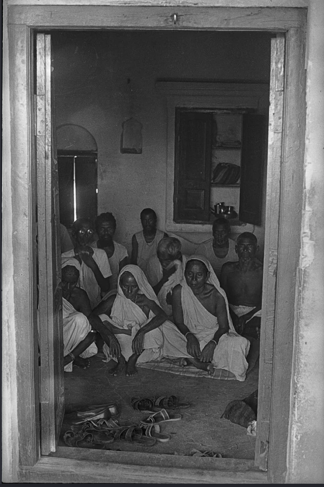
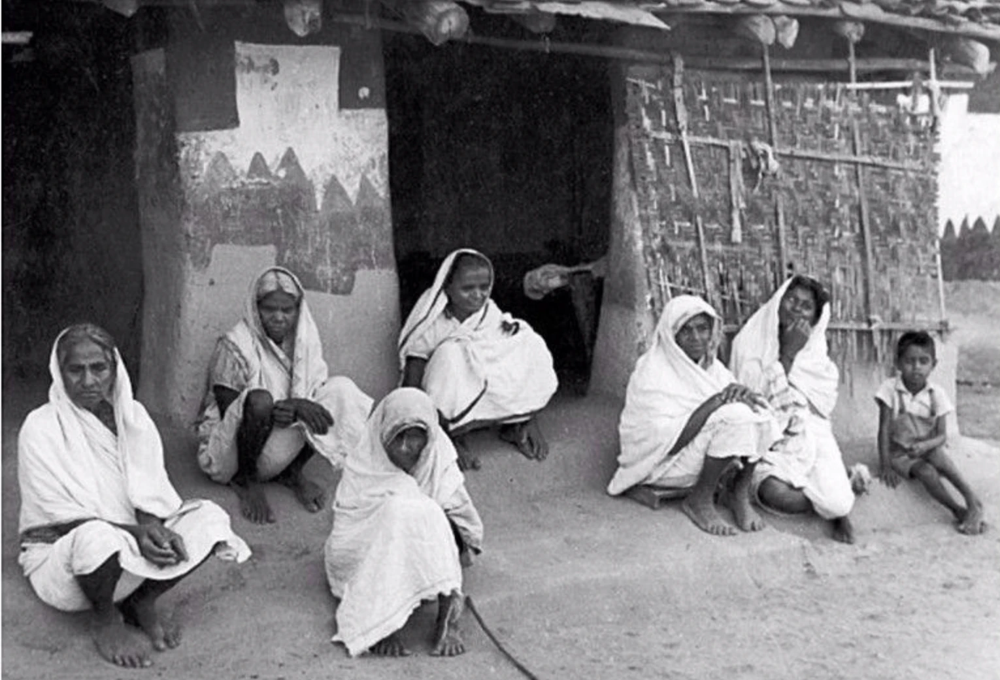
The law changed in 1856.
The white sari stayed.
Postscript · outside the album · today
A father-in-law gives away his widowed daughter-in-law at her second wedding. News clip, 2020s.
Image credits
Notes in order of appearance · Chicago Manual of Style, 17th ed.
- Robert Melville Grindlay, Preparation for a Suttee, or the Immolation of a Hindoo Widow, etched by J. Willis and H. Melville, engraved by R. G. Reeve, aquatint, in Scenery, Costumes and Architecture, Chiefly on the Western Side of India (London, 1826–30).
- A Widow Walking into the Fire, early nineteenth century, hand-coloured engraving.
- Ceremony of Burning a Hindu Widow with the Body of Her Late Husband, nineteenth century, wood engraving.
- H. Merté after A. Wanjura, Eine Wittwenverbrennung in Ostindien, engraved by R. Brendamour, 1880s, wood engraving.
- "Man Kour, Hindoo (Brahmin) Widow, Saharunpoor," plate 164, albumen print, in The People of India, ed. J. Forbes Watson and John William Kaye (London: India Museum, 1868–75).
- Portrait of a Woman in a White Sari, early twentieth century, mounted studio photograph.
- Ishwar Chandra Vidyasagar, nineteenth century, photograph, digitally colourised.
- The Hindu Widows' Re-marriage Act, 1856, Act No. XV of 1856, 25 July 1856, printed text.
- Charles John, Earl Canning, ca. 1860, steel engraving.
- Widows Seen through a Doorway, mid-twentieth century, gelatin silver print.
- Widows outside a Village House, mid-twentieth century, gelatin silver print.
- Postscript: news video of a widow's remarriage, 2020s, digital video.
Sources for the narrator's notes
- Bengal Sati Regulation, 1829. Regulation XVII of 1829.
- Hindu Widows' Re-marriage Act, 1856. Act No. XV of 1856.
- Vidyasagar, Ishwar Chandra. Bidhoba bibaho prochalito howa uchit kina etadbishayak prostab. Calcutta, 1855.